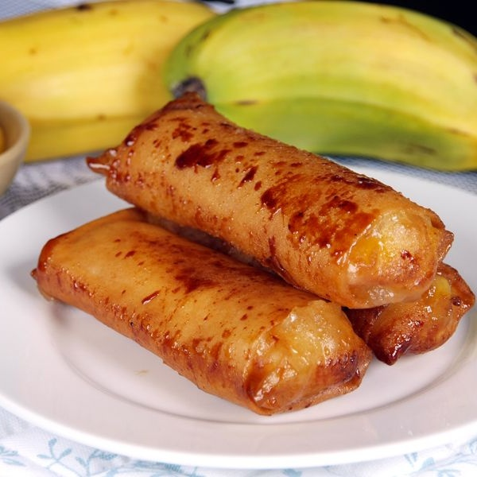

Turon Recipe

Description
An example of a Filipino snack is turon. It is also known as banana lumpia or deep-fried banana rolls. Turon, a characteristic Filipino meryenda and dessert, has grown in popularity over time.
Ingredients
- 6 pieces bananas saba or plantains, cut in half (lengthwise)
- 1 cup jackfruit ripe, sliced
- 1 1/2 cup sugar
- 12 pieces lumpia wrapper
- 2 cups cooking oil
Steps
- Make sure the banana is adequately covered in sugar by rolling it on the sugar plate.
- Put some ripe jackfruit and the sugar-coated banana in the spring roll wrapper.
- The spring roll wrapper should be folded, locked, and the edge should be water-sealed.
- Heat some oil in a pan, then add some sugar. Wait until the brown sugar floats.
- Place the banana in the wrapper and fry until the wrapper is golden brown and the extra sugar has adhered to it.
- As a dessert or snack, serve hot. Enjoy and share!